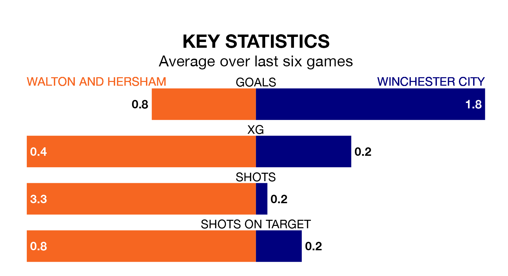

Walton and Hersham and Winchester City face each other at the Sports Ground on Saturday both looking for a first win in six games.
Walton & Hersham have lost three and drawn two of their last five matches, during which time Winchester have suffered one loss and four draws.
With 48 goals in 24 games so far this season, Walton & Hersham are scoring more than average in the league with 2.0 goals per game. But they are conceding more than average too, letting in 42 goals at a rate of 1.8 per game.
Winchester, meanwhile, are average scorers, with 1.7 goals per game. They have also conceded 1.7 goals per game.
The home team are 10th in the table after 24 games, of which they have won 10 and drawn six, earning 36 points.
City are two places behind Walton & Hersham in 12th, with eight wins and eight draws putting them on 32 points.
Walton & Hersham's last match was on January 13, a 2-1 loss against Swindon Supermarine.
Winchester lost 5-1 against Sholing last time out, also on January 13.
Updated: 10:02 (UTC), 19/01/24